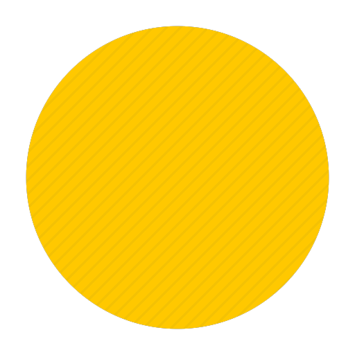
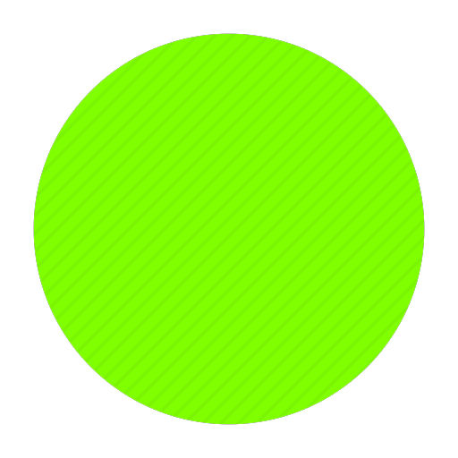
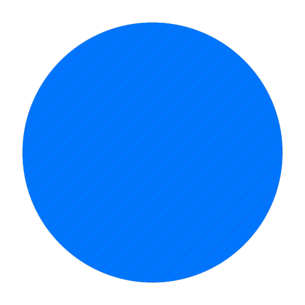
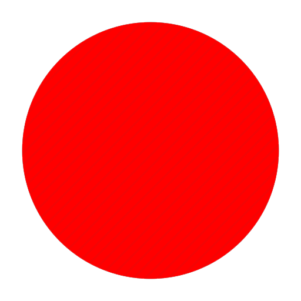

 Версия: 1.14.4
 Средний онлайн: 13/50
 Дата: 15.02.2020 - 4.03.2020
 Количество нарушений: 4
В этом первом сезоне очевидно не было много игроков. На сервере царил ютубер JayJay.
На сервере не было никаких дополнительных плагинов. И из-за того, что на сервере
Сервер прожил чуть меньше 1-го месяца.
Он и баловал игроков этого сервера.
не было нормальных античитов, некоторые игроки начали юзать X-ray и т.п. Ядро
сервера стоял поумолчанию. JayJay решил прорекламировать этот сервер, став
владельцем сервера и первым кто вложил в него деньги. О сервере узнало большое
количество человек, и поэтому решили перезапустить проект, который и переродился
в следующий сезон.
Версия: 1.15.2
Средний онлайн: 35/40
Дата: 10.04.2020 - 16.06.2020
Количество нарушений: 2
Во втором сезоне было серьёзнее чем в прошлом. Присутствовал тот же JayJay.
Из-за прошлой рекламы, на сервере присутствовали 30+ человек, проходка на сервер
Длилось это около 60-ти дней.
была бесплатной. Также поменялось ядро сервера, добавились прикольные плагины
решили перезапустить проект, который и переродился в следующий сезон. И еще
подключили античиты, что количество нарушений спало.
Версия: 1.16.4
Средний онлайн: 50/228
Дата: 4.01.2021 - 3.05.2021
Количество нарушений: 5
Третий сезон вышел в новый год. С открытием нового сезона время очень сильно затянулось.
На сервере присутствовала новогоднее обновление, которая длилось до конца января. JayJay
Сезон существовал от начала января до начала мая.
и его команда сильно превзошла себя в прошлом сезоне, что и привело огромный онлайн на сервере.
Один из стример решил зайти на этот сервер, больше половины сервера играла со стримером. Но
стример решил подать заявку на администратора сервера что и получил желаемое. Из-за того, что
у стримера было обилие возможностей администратора, он решил разрушить весь сервер, что привело
к окончанию третьего сезона.
Версия: 1.17.1
Средний онлайн: 55/999
Дата: 15.06.2021 - 27.01.2022
Количество нарушений: 9
Прошлый сезон один из стримеров стер весь сервер, и на востановку ушло полтора месяца.
Jay Jay собрал новую команду и начал все заного, и за месяц он восстановил сервер и набрал новых
Через 7 меяцев сезон закрылся.
игроков, потому что с прошлого сезона многие игроки покинули сервер из-за краша сервера. Онлайн на
новом сезоне проктически остался прежним. На нем играли пару ютуберов и стримеров.
Версия: 1.18.1
Средний онлайн: 90/-1
Дата: 1.02.2022 - 14.09.2022
Количество нарушений: 14
На 5-ом сезоне было похожое новогоднее обновление как на 3-ем сезоне
На этот раз онлайн вырос до 70-ти, это заметил один из популярных ютуберов и решил посетить данный
Вышло новая версия игры, и поэтому проект перерос в 7-ой сезон!
сервер, что привело еще больше игроков. Сервер рос на глазах, новые фишки, он стал один из узнаваемых
майнкрафт серверов в СНГ.
Версия: 1.19.2
Средний онлайн: 100/1000
Дата: 20.10.2022 - Настоящее время
Количество нарушений: 16+
Сервер популяризировался на глазах!
Сервер был очень узнаваемым, в первые недели открытия абсолютно все скупили проходки. Скупили все 150
На сервере играют посей день!
проходок. Сервер был переполнен, и команда была вынуждена была выставить максимальный онлайн на сервере
1000 человек. На нем играли многие и известные стримеры из СНГ.